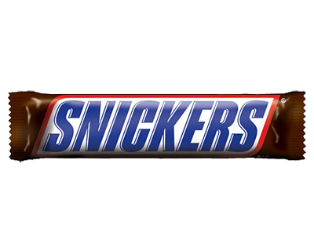

SNICKERS melkchocolade reep duo
Details Waar te koopSNICKERS melkchocolade reep single
Beschikbare maten: 50g
Reep van melkchocolade met een luchtige vulling, karamel en knapperige, geroosterde pinda’s in een handige meeneemverpakking.
 waar te koopVoedingswaarde voor 100g
| Energie | 2018kJ / 481kcal |
|---|---|
| Vetten | 23g |
| Waarvan verzadigd vet | 7.7g |
| Koolhydraten | 61g |
| Waarvan suikers | 52g |
| Eiwitten | 8.6g |
| Zout | 0.63g |
Suiker, Glucose Siroop, PINDA'S, MAGEREMELKPOEDER, Cacaoboter, Cacaomassa, Zonnebloemolie, LACTOSE, Botervet (Van MELK), Weipoeder (Van MELK), Palmvet, Zout, Emulgator (SOJALECITHINE), KIPPENEI-EIWITPOEDER, MELKEIWIT, Natuurlijk Vanille-Extract Kan Het Volgende Bevatten: HAZELNOTEN.
Porties per verpakking: 1
| Portiegrootte: 50g | (%) |
|---|---|
| Energie | 241kcal (12%) |
| Vetten | 11g (16%) |
| Waarvan verzadigd vet | 4g (20%) |
| Koolhydraten | 30g (12%) |
| Waarvan suikers | 26g (29%) |
| Eiwitten | 4.3g (9%) |
| Zout | 0.31g (5%) |
Raadpleeg het etiket voor de meest nauwkeurige informatie over voedingswaarden, ingrediënten en allergenen.
Meer gelijkwaardige producten
SNICKERS melkchocolade reep duo
Details Waar te koopSNICKERS melkchocolade reep duo
Details Waar te koopSNICKERS melkchocolade reep duo
Details Waar te koop